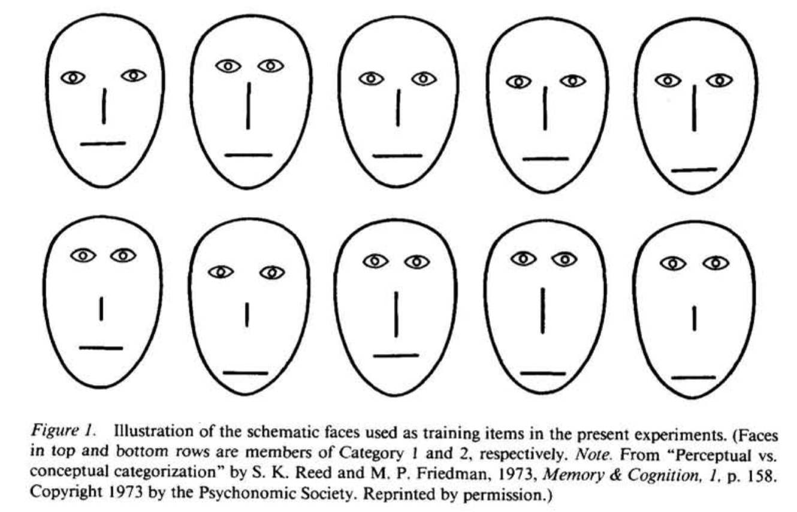
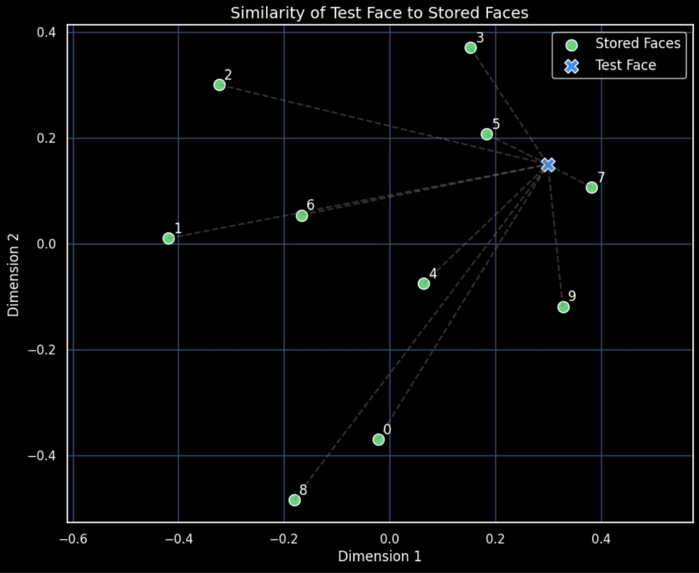
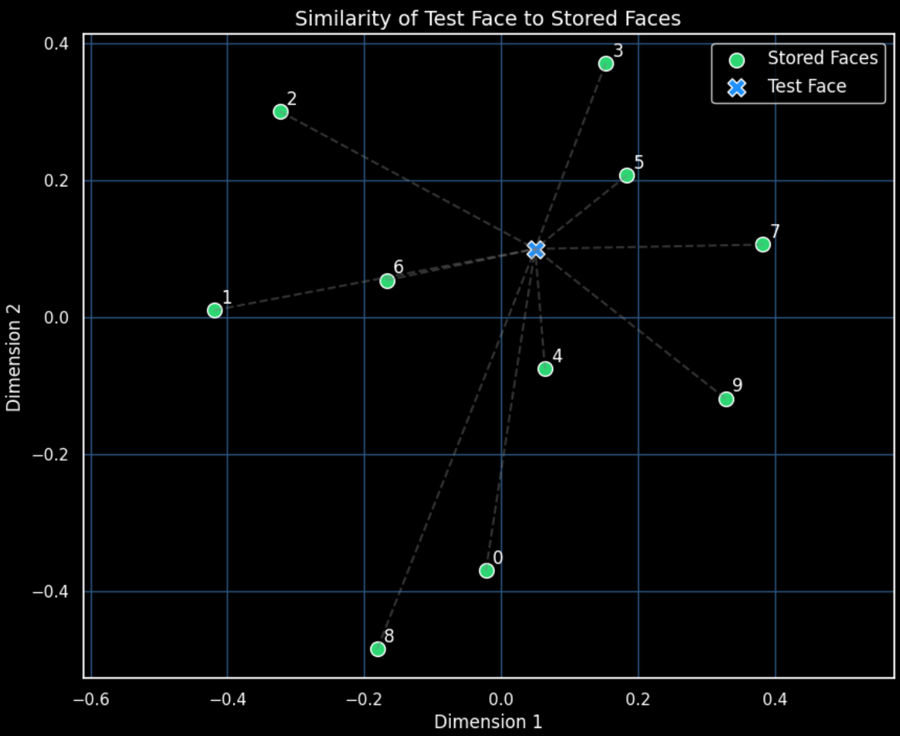

import numpy as np
import matplotlib.pyplot as plt
from sklearn.manifold import MDS
import seaborn as sns
from scipy.spatial.distance import pdist, squareform
np.random.seed(42)Multidimensional Scaling (MDS) from Nosofsky (1991)
I came across an interesting paper Titled ‘Tests of an exemplar model for relating perceptual classification and recognition memory’ by R. Nosofsky (1991) which introduces an exemplar-based model to explain how people classify and recognize stimuli. In this section we will try to understand the first part of the paper that uses Multidimensional Scaling (MDS) to place each face into a mathematical space (we will not be covering the second part here, perhaps in another page in the future).
Abstract
“Experiments were conducted in which Ss made classification, recognition, and similarity judgments for 34 schematic faces. A multidimensional scaling (MDS) solution for the faces was derived on the basis of the similarity judgments. This MDS solution was then used in conjunction with an exemplar-similarity model to accurately predict Ss’ classification and recognition judgments. Evidence was provided that Ss allocated attention to the psychological dimensions differentially for classification and recognition. The distribution of attention came close to the ideal-observer distribution for classification, and some tendencies in that direction were observed for recognition. Evidence was also provided for interactive effects of individual exemplar frequencies and similarities on classification and recognition, in accord with the predictions of the exemplar model. Unexpectedly, however, the frequency effects appeared to be larger for classification than for recognition.”
Link to paper - https://pubmed.ncbi.nlm.nih.gov/1826320/
Replication
Dependencies
We will begin with importing libraries relevant to us like numpy and sns for computing and plotting. We would also be importing pdist and squareform from scipy.spatial.distance to calculate the pairwise distance and import MDS from sklearn.manifold to calculate the MDS values.
Lastly, we set the seed to ensure our (pseudo) random numbers are reproducible.
Faces & Features
Now that we have our dependencies sorted, we can start building. The very first thing we need to do is set the faces and features like the study does.

To replicate this, we will create 10 faces with 4 features (e.g. eyes height, distance between eyes, nose length, etc). Nosofsky (1991) has defined the features but for our purposes we can move ahead with random features.
n_faces = 10
n_dims = 4
faces = np.random.rand(n_faces, n_dims)
print("Face feature matrix:")
print(faces)Face feature matrix:
[[0.37454012 0.95071431 0.73199394 0.59865848]
[0.15601864 0.15599452 0.05808361 0.86617615]
[0.60111501 0.70807258 0.02058449 0.96990985]
[0.83244264 0.21233911 0.18182497 0.18340451]
[0.30424224 0.52475643 0.43194502 0.29122914]
[0.61185289 0.13949386 0.29214465 0.36636184]
[0.45606998 0.78517596 0.19967378 0.51423444]
[0.59241457 0.04645041 0.60754485 0.17052412]
[0.06505159 0.94888554 0.96563203 0.80839735]
[0.30461377 0.09767211 0.68423303 0.44015249]]As you can see from the output, each row is a face, and each column is a different feature of the face. For example, if we consider the features to be aspects like Eye height, Eye separation, Nose length, and Mouth height, we can interpret the first face, which has the following values, as -
[0.37454012 0.95071431 0.73199394 0.59865848]
Eye height ≈ 0.37 → slightly below mid level probably.
Eye separation ≈ 0.95 → appears to be wide.
Nose length ≈ 0.73 → likely a long nose.
Mouth height ≈ 0.60 → almost medium height.
Note - I have mentioned features like eye height, nose length, etc. for the sake of comprehension, they are not inherently factored into the code
Pairwise Distance
Next, we need to calculate the pairwise distance between every single row in the faces matrix. We would do so using the pdist function.
If faces is a matrix such that -
\[ \text{faces} = \begin{bmatrix} x_1 & x_2 & x_3 & x_4 \\\\ y_1 & y_2 & y_3 & y_4 \\\\ z_1 & z_2 & z_3 & z_4 \end{bmatrix} \]
Then each row here represents a face with \(x_1\), \(x_2\), \(x_3\), etc. representing a feature. Thus, pdist(faces) computes:
Distance between Face 0 and Face 1.
Distance between Face 0 and Face 2.
Distance between Face 1 and Face 2 (and so on).
The pdist function uses Euclidean Distance by default which is calculated as -
\[ d = \sqrt{(x_1 - x_2)^2 + (y_1 - y_2)^2} \]
The reason we are calculating the pair wise values (using Euclidean distance) is so that we can use the same for Multidimensional scaling, a dimension reduction method. You might be familiar with PCA as another dimension reduction method which uses correlation. I was surprised to learn that PCA and MDS at times can present with similar values.
We then run our code to get -
face_dists = squareform(pdist(faces))We then use the exponential decay function used by Nosofsky (1991) to simulate similarity and added noise from a normal distribution. Nosofsky (1991) used the following formula for the same -
\(s_{ij} = \exp(-d_{ij})\)
We also clip the range to ensure it’s clean and interpretable for our MDS. The last line prevents assymetry.
similarity_matrix = np.exp(-face_dists) + np.random.normal(0, 0.05, face_dists.shape)
similarity_matrix = np.clip(similarity_matrix, 0, 1)
similarity_matrix = (similarity_matrix + similarity_matrix.T) / 2Multidimensional Scaling
We used MDS to convert pairwise dissimilarities into 2D coordinates, creating a psychological map where:
Faces that look similar are closer.
Faces that look different are farther.
The original paper generated a 4D space, we have used a 2D space to keep it simpler.
import warnings
warnings.filterwarnings("ignore")
dissimilarity_matrix = 1 - similarity_matrix
mds = MDS(n_components=2, dissimilarity='precomputed', random_state=42)
mds_coords = mds.fit_transform(dissimilarity_matrix)
print("\n2D psychological coordinates:")
print(mds_coords)
2D psychological coordinates:
[[ 0.02883221 -0.4017954 ]
[-0.43105011 -0.03414201]
[-0.30656582 0.33467081]
[ 0.17353843 0.35341104]
[ 0.04439885 -0.0872471 ]
[ 0.17295691 0.18802738]
[-0.19412342 0.07736743]
[ 0.38411899 0.12937088]
[-0.2018434 -0.47425695]
[ 0.32973737 -0.08540607]]Lastly, we introduced a new face into the psychological space. Its position simulates a stimulus presented during a recognition/classification trial. Along with that we calculated the distance between the test face and each stored face and then used Shepard’s law to convert those distances into activation strengths, and plotted the same.
test_face_coord = np.array([0.3, 0.15])
distances = np.linalg.norm(stored_coords - test_point, axis=1)
similarities = np.exp(-c * distances)We get the following plot for our test face with the above coordinates:

If we change our coordinates to the following code - test_face_coord = np.array([0.05, 0.1]), our plot changes:
